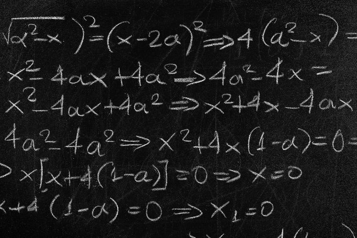
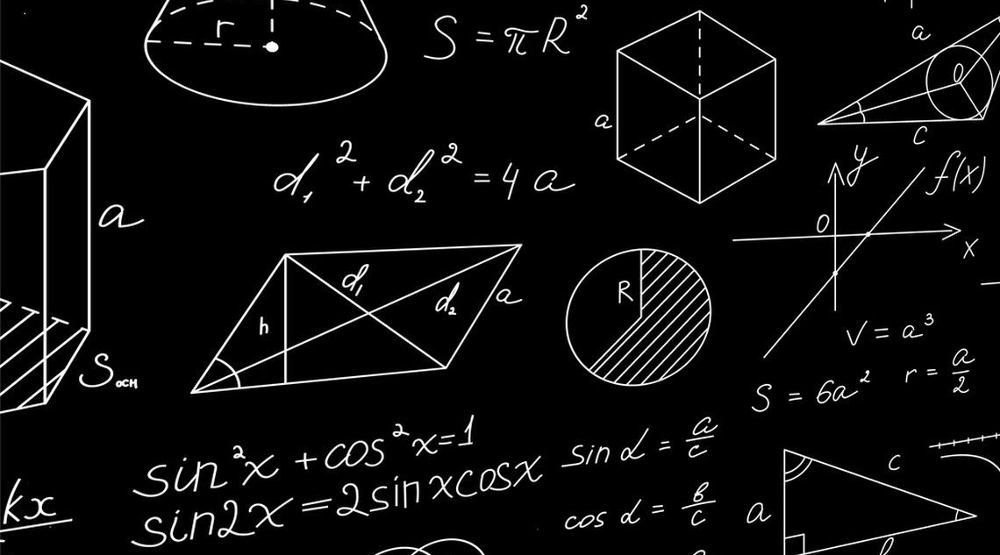
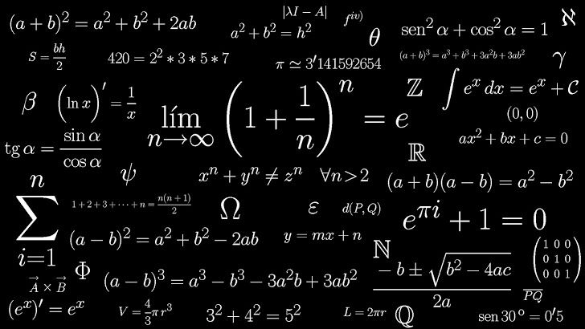
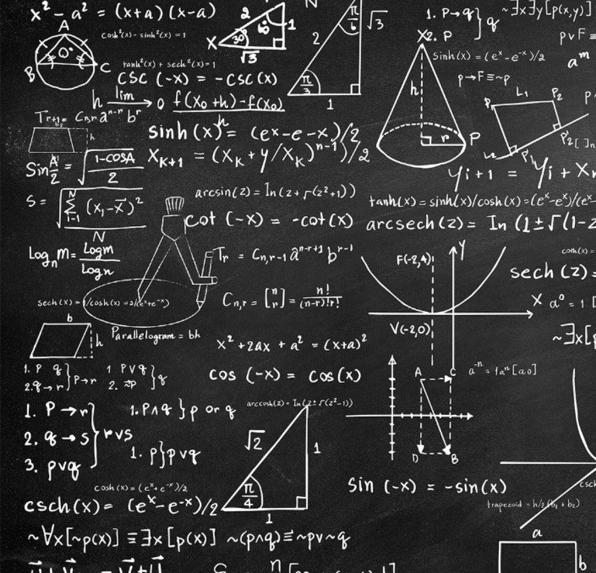
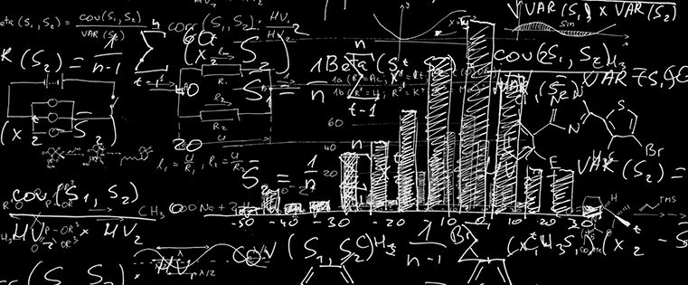

Algebra

Algebra yra viena svarbiausių ir plačiausiai naudojamų matematikos sričių, kurioje nagrinėjami skaičiai, raidės, simboliai ir jų tarpusavio ryšiai. Skirtingai nuo paprastų aritmetinių veiksmų, algebroje dažnai naudojamos raidės, kurios gali reikšti nežinomus arba kintančius skaičius. Pavyzdžiui, raidė x gali reikšti skaičių, kurį reikia surasti sprendžiant lygtį. Algebra leidžia ne tik atlikti skaičiavimus, bet ir sudaryti bendras taisykles, kurios gali būti pritaikomos daugeliui skirtingų situacijų. Viena svarbiausių algebros dalių yra lygčių ir nelygybių sprendimas. Sprendžiant lygtis ieškoma nežinomojo reikšmės, kuri atitinka pateiktą sąlygą. Taip pat algebroje nagrinėjami reiškiniai, funkcijos, laipsniai, šaknys ir daug kitų matematinių sąvokų. Šios žinios padeda lavinti loginį mąstymą ir gebėjimą nuosekliai spręsti problemas. Algebra yra svarbi ne tik mokykloje. Ji naudojama ekonomikoje, fizikoje, informatikoje, programavime, inžinerijoje ir daugelyje kitų sričių. Pavyzdžiui, naudojant algebra galima apskaičiuoti nežinomus dydžius, numatyti tam tikrus pokyčius arba sudaryti įvairius matematinius modelius. Todėl algebra yra svarbus pagrindas norint geriau suprasti ne tik matematiką, bet ir daugelį procesų, vykstančių mus supančiame pasaulyje.
Geometrija

Geometrija yra matematikos sritis, nagrinėjanti figūras, jų formas, dydžius, padėtį ir savybes. Ji padeda geriau suprasti erdvę ir objektus, kuriuos matome kasdienėje aplinkoje. Geometrijoje nagrinėjami taškai, tiesės, kampai, trikampiai, keturkampiai, apskritimai ir daugelis kitų plokštumos bei erdvės figūrų. Ši matematikos sritis leidžia tiksliai aprašyti įvairių objektų matmenis ir jų tarpusavio padėtį. Viena svarbiausių geometrijos dalių yra figūrų matavimas. Mokantis geometrijos skaičiuojamas figūrų perimetras, plotas ir tūris. Pavyzdžiui, galima apskaičiuoti kambario plotą, pastato aukštį arba dėžės tūrį. Geometrijoje taip pat svarbūs kampai ir įvairūs ryšiai tarp figūrų kraštinių. Šios žinios padeda spręsti praktines problemas ir geriau suprasti, kaip yra sudaryta mus supanti aplinka. Geometrija plačiai naudojama architektūroje, statyboje, dizaine, inžinerijoje ir technologijose. Architektai ir inžinieriai turi tiksliai apskaičiuoti pastatų dydžius, konstrukcijų kampus ir naudojamų medžiagų kiekius. Geometrijos principai taip pat naudojami kuriant kompiuterinę grafiką, vaizdo žaidimus, žemėlapius ir įvairius techninius brėžinius. Dėl šios priežasties geometrija yra labai svarbi tiek matematikos, tiek praktinio gyvenimo dalis.
Matematinė analizė

Matematinė analizė yra matematikos sritis, nagrinėjanti funkcijas, jų kitimą ir įvairius nuolat vykstančius procesus. Ji padeda suprasti, kaip vienas dydis keičiasi priklausomai nuo kito ir kaip galima aprašyti sudėtingus reiškinius matematiniais metodais. Matematinėje analizėje svarbios tokios sąvokos kaip funkcijos, ribos, išvestinės ir integralai. Išvestinės leidžia nagrinėti, kaip greitai keičiasi tam tikras dydis. Pavyzdžiui, jos gali būti naudojamos tiriant objekto greitį arba kitimo spartą. Integralai dažnai naudojami apskaičiuojant plotus, tūrius ir bendrus sukauptus pokyčius. Ribų sąvoka padeda suprasti, prie kokios reikšmės artėja tam tikras skaičius arba funkcija. Visos šios sąvokos yra glaudžiai susijusios ir leidžia analizuoti sudėtingus matematinius procesus. Matematinė analizė yra plačiai naudojama daugelyje mokslų. Fizikoje ji padeda aprašyti judėjimą, jėgas ir įvairius gamtos reiškinius. Ekonomikoje ji gali būti naudojama tiriant kainų, pelno ar paklausos pokyčius. Inžinerijoje matematinė analizė padeda projektuoti įvairius įrenginius ir konstrukcijas. Dėl savo galimybės tiksliai aprašyti pokyčius ši matematikos sritis yra viena svarbiausių šiuolaikiniame moksle ir technologijose.
Trigonometrija

Trigonometrija yra matematikos sritis, nagrinėjanti ryšius tarp trikampių kampų ir kraštinių. Ji ypač svarbi sprendžiant uždavinius, kuriuose reikia apskaičiuoti nežinomus atstumus, kampus arba aukščius. Trigonometrijoje naudojamos specialios matematinės funkcijos, vadinamos sinusu, kosinusu ir tangentu. Šios funkcijos leidžia nustatyti ryšius tarp stačiojo trikampio kraštinių ir kampų. Trigonometrija taip pat nagrinėja ne tik trikampius. Trigonometrinės funkcijos naudojamos aprašant įvairius pasikartojančius procesus ir bangas. Pavyzdžiui, jos gali būti naudojamos tiriant garso bangas, šviesą, svyravimus ir kitus periodiškai besikartojančius reiškinius. Dėl šios priežasties trigonometrija yra svarbi ne tik geometrijoje, bet ir fizikoje bei kituose moksluose. Šios matematikos žinios plačiai taikomos astronomijoje, navigacijoje, inžinerijoje ir geografijoje. Naudojant trigonometriją galima apskaičiuoti objekto aukštį jo tiesiogiai nematuojant arba nustatyti atstumą iki sunkiai pasiekiamo objekto. Ji taip pat naudojama nustatant vietovę, kuriant žemėlapius ir projektuojant įvairius techninius įrenginius. Trigonometrija parodo, kaip matematiniai skaičiavimai gali padėti suprasti realų pasaulį ir spręsti praktines problemas.
Kombinatorika ir tikimybės

Kombinatorika ir tikimybių teorija yra glaudžiai susijusios matematikos šakos, nagrinėjančios įvairių variantų sudarymą ir atsitiktinių įvykių dėsningumus. Kombinatorika padeda atsakyti į klausimą „kiek iš viso yra galimų variantų ar kombinacijų?“, o tikimybių teorija įvertina, „kokia yra tikimybė, kad įvyks konkretus įvykis?“. Praktikoje viskas prasideda nuo dviejų pagrindinių kombinatorikos taisyklių: sudėties (kai renkamės elementą A arba B, variantai sudedami) ir daugybos (kai renkamės elementą A ir B, variantai dauginami). Norint suskaičiuoti sudėtingesnius rinkinius, naudojamos trys pagrindinės sąvokos: kėliniai (kai visi turimi elementai tiesiog sukeičiami vietomis), gretiniai (kai iš didesnės grupės renkama dalis elementų ir jų tvarka yra svarbi) bei deriniai (kai iš grupės renkama dalis elementų, tačiau jų tvarka visiškai nesvarbi, pavyzdžiui, traukiant loterijos bilietus). Apskaičiavus galimus variantus, galima pereiti prie tikimybių. Klasikinė įvykio tikimybė skaičiuojama palankių baigčių skaičių padalijus iš visų įmanomų baigčių skaičiaus. Tikimybės reikšmė visada yra tarp 0 (neįmanomas įvykis) ir 1 (būtinas įvykis), arba išreiškiama procentais nuo 0% iki 100%. Jei nagrinėjami keli nepriklausomi įvykiai, jų bendra tikimybė skaičiuojama dauginant atskiras tikimybes, o jei įvykiai yra nesutaikomi (negali įvykti kartu) – jų tikimybės sudedamos. Šių dviejų disciplinų taikymas apima itin plačias sritis: nuo azartinių lošimų ir kompiuterinių algoritmų iki duomenų mokslo, statistikos bei rizikos vertinimo draudimo ar finansų rinkose.